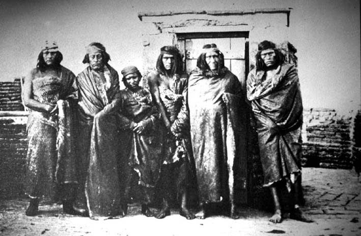

| The other |
|  |
| Benito Panunzi, Group of Tehuelche Indians |
Welcome to the guided tour "the other", which is about to depart! Please use the "back" and "forward" buttons below to take you through this part of the exhibition. Click on the images if you want to find out more about an exhibit, or if you want to see a larger image of it.
The nineteenth century was not merely an
era of identification: of the visual, narrative, or ritual construction
of nations, classes, genders, ethnicities and various other kinds of
communities that were taken to be self-evident and "natural". Rather,
the possibility of identifying (and of identifying oneself with) such
communities was dependent on their being contrasted to an "other",
which had to be constructed at the same time as the "self". Although,
or because, this simultaneous emergence of self and other always also
implied their hierarchization (that is, their inscription into scales
of moral, political or physical value), the other was hardly ever
merely a negative mirror-image of the self. More often, relations
between self and other were much more complex, with lines of
exchange, desire or longing criss-crossing the boundary of a surface
appearance of binary oppositions.
In Latin America, as we shall see in this tour, the
distinction between self and other was further complicated by the
peripheral location and post-colonial status of the emergent
nation-states. At the same time as containing their own "others within"
(indigenous and mestizo communities, Afro-Americans, sexual or
linguistic minorities, indeed "the people" themselves), these
nation-states as they were imagined by emergent, Creole ruling elites,
were themselves constantly under threat of being "othered" by the
industrial centres of the north. This complex constellation, this tour
will argue, inscribed a particular anxiety at the heart of the images
of "others" that proliferated in photographs, museum displays,
paintings
and monuments of the late nineteenth century.
|
[ Back to index | Forward ] |